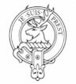
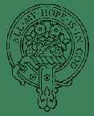

FRASER
FRASER

FRASERS OF LOVAT – LORDS LOVAT
The Frasers of Lovat descend from Sir Simon Fraser [brother of Sir Alexander the Chamberlain] who married Lady Margaret Sinclair, daughter of the Earl of Caithness. Documents dated 12th September, 1367, connect a Fraser with the lands of Lovat and the Aird. Among the lands acquired by the Lovat Frasers, the prominent ones were in Stratherrick, which was very dear to the hearts of the Lovat chiefs, the church lands of Beauly Priory in Inverness-shire, part of the south shore of Beauly Firth and the whole of Strathfarrar. About 1460 Hugh Fraser, 6th Laird of Lovat [c.1436-1501] became the 1st Lord Lovat. Several generations later, Hugh Fraser, 9th Lord Lovat [1666-1696] who had four daughters but no son, willed his estates to his grand-uncle, Thomas Fraser of Beaufort, instead of his eldest daughter, Amelia [1686-1763] Thomas Fraser’s second son, Simon, later 11th Lord Lovat, had planned to marry the Lovat heiress, Amelia, but the plan failed, and in retaliation, Simon forcibly married her mother, the dowager Lady Lovat (the marriage was later annulled.) The 11th Lord Lovat "The Fox" plotted with both Government and Jacobite forces, and was the last nobleman to be beheaded on Tower Hill, London, in 1747. The Lovat title was attained by an Act of Parliament, and the estates forfeited to the Crown. In 1774 the forfeited lands were restored to his eldest son, Lt-General Simon Fraser, Master of Lovat, but not the title. The original line ended with the death in 1815 of the Master’s younger half-brother, Archibald, without legitimate surviving issue. The estates passed to the nearest collateral heir-male, Thomas Alexander Fraser, 10th laird of Strichen, Aberdeenshire, who in 1837 was created Baron Lovat in the Peerage of the U.K, and the attainder of the Scottish title was reversed in 1857, when he became 14th Lord Lovat. With the death of the 17th Lord Lovat in 1995, aged 83, his grandson, Simon Fraser, born in 1977, became the 18th Lord Lovat and 25th MacShimi, the Chief of the Clan Fraser of Lovat. ARMS Fraser: Azure, 3 fraises or cinquefoils argent Fraser of Lovat: Quarterly 1st & 4th azure, 3 fraises or cinquefoils argent 2nd & 3rd argent, 3 antique crowns gules.
CREST BADGES
Fraser:
On a mount a flourish of strawberries, leaved and fructed proper.
Fraser of Lovat: A buck’s head erased proper.
MOTTOES
Fraser:
All my hope is in God.
Fraser of Lovat: Je suis prest (I am ready)
PLANT
BADGES . Yew. (Fraser of Lovat)
The plant badge for Fraser is a strawberry flower.
